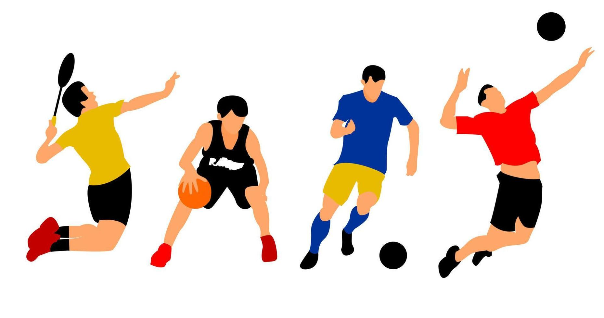

.jpg)
Sport
Sports:
Sport is defined as any physical activity that requires effort and skill to focus on performing this activity according to specific rules, and sometimes involves competition that is governed by rules and behavioral patterns through official organizations and clubs. Sports take on various forms that constantly change depending on customs, societal trends, and emerging trends. The definition of sports includes all forms of physical activity that contribute to improving physical fitness, mental well-being, and social interaction, whether they are organized, unorganized, competitive sports, or popular sports and games.

Importance of Sports:
The importance of sports lies in many areas of life, including:
- Enhancing education based on life skills and healthy lifestyle patterns, including fitness values, proper nutrition, and making the right decisions that positively support health.
- Stimulating the growth of children and encouraging them to achieve better academic performance through the use of play in education.
- Encouraging communication among people from different races, cultures, religions, and languages, regardless of their social and economic differences; thus, sports serve as a powerful social tool.
- Improving physical and mental health, promoting active citizenship, and enhancing social integration.
- Improving physical fitness in children and protecting them from obesity, as childhood obesity is one of the most serious challenges facing public health in the current era.
- Reducing cases of physical inactivity, classified as the fourth leading global cause of death worldwide.
- Building communities and contributing to conflict resolution and promoting mutual understanding.
Most Popular Sports Around the World:
Competitiveness predominates in the most famous sports around the world, and here is a breakdown of the most popular types of sports:
- Football (Soccer): This sport is the most popular in the world, originating in England in the nineteenth century. It is characterized by not requiring high costs, as it involves chasing the ball, making it accessible to all people, whether rich or poor. Approximately 4 billion people are estimated to be fans of this sport.
- Cricket: The number of fans of this game is estimated at 2.5 billion people, most of whom are from Britain and its former colonies like India and Australia. It is a sport similar to baseball.
- Hockey: The number of followers of this sport is around 2 billion people. It includes two types: field hockey and ice hockey, with the former being popular in Europe and Asia while the latter is prominent in North America.
- Tennis: In this game, two players compete on either side of a long and high net, hitting the yellow ball back and forth with a racket. This game is followed by over a billion people worldwide.
- Basketball: Basketball is played all over the world and requires two teams of players each with a high net. The ball must be thrown into this net to score points in an atmosphere filled with running, jumping, shooting, and resistance. It was invented by the Canadian teacher James Naismith and is now followed by over 825 million people.
- Golf: The game of golf involves trying to place a small ball in a hole with as few strokes as possible. This game originated in Scotland in the fifteenth century and is very popular in Western Europe, East Asia, and North America, with approximately 450 million people following it worldwide.

History of Sports:
Sports began around 3000 years ago, initially confined to hunting exercises or preparation for war. This led to ancient games relying on throwing spears or rocks. The Olympics started in 776 BC, featuring running races, chariot races, wrestling, jumping, discus throwing, and javelin throwing. It is not yet known which was the first sport played, but wrestling or boxing is speculated to be among the earliest along with running. The first Olympic Games in 760 BC featured only a running event, with various other games being included in subsequent Olympic events.
Conclusion:
Sports are among the most important physical activities for the body, as well as having significant importance in communities and the world as a whole. Sports encompass all competitive and popular games, with many games becoming famous worldwide, such as football and basketball. Each has clubs and competitions followed by millions or even billions of people around the world. The history of sports dates back to training for wars and hunting in prehistoric times.